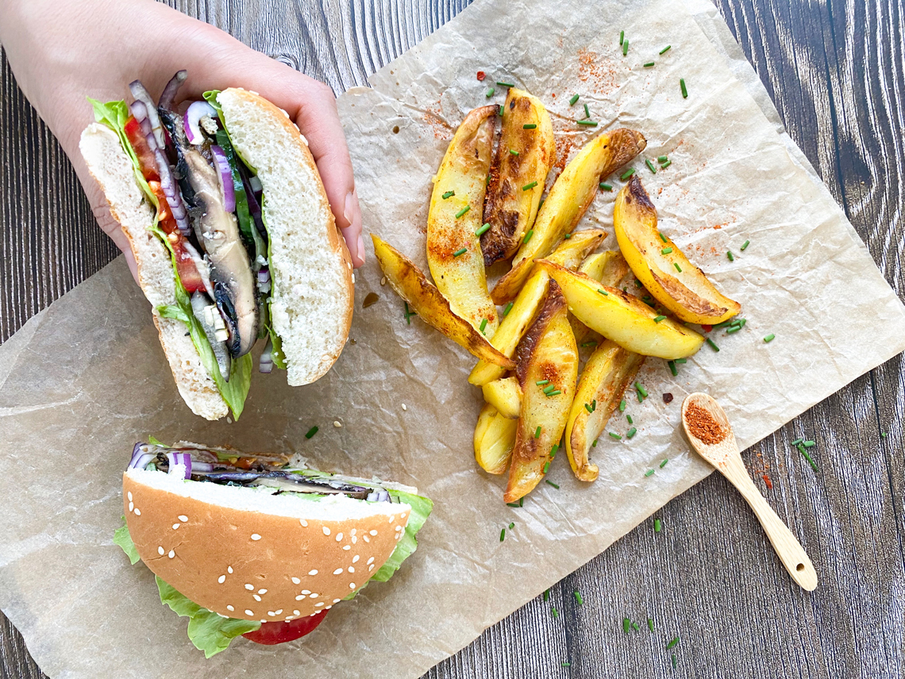

Portobello mushroom burger
JUICY. Let's make a great tasting grilled portobello mushroom burger! It is juicy, tasty and even a person with refined taste would love it!
September 27 2021,
Jelena Cvetković Š.
The mushrooms are marinated and grilled which give the burger juiciness. The secret of perfect flavor of portobello mushrooms is marinade: tamari soy saouce, grlic, garlic powder, fresh thyme, oil, lemon juice and pepper. If you like it more spice, you could add some red pepper.
Portobello mushrooms are often used as a substitute for hamburger. Beside this they provides slightly more than 3 grams of protein, no cholesterel and only 0,5 grams of fat. They are alost calorie free. One more reason to love them :)

These large mushrooms have basically the same features as other mushrooms. Only Portobello are much bigger. Their cap can be up to 15 cm in size. Their structure is thick and fleshy, and they smell strong. They’re tender, juicy, and bursting.
Portobello mushroom burger
Marinated and grilled portobello mushroom are great as a plant-based burger substitute, whether you are becoming a vegetarian or you just want to cut down on your meat intake.
 Preparation: 20 min
Preparation: 20 min
 Cooking: 15 min
Cooking: 15 min
 Difficulty: easy
Difficulty: easy
 Servings: 4
Servings: 4
vegan, dairy free
Ingredients:
- 4 portobello mushrooms
- 4 sesame loaves
- 4 leaves of lettuce
- cucumber
- tomato
- fennel
- red onion
Marinade:
- 1 clove of garlic
- 1 tablespoon garlic powder
- 1 tablespoon thyme (or 2 sprigs fresh thyme, stems removed and finely chopped)
- 4 tablespoons tamari sauce
- 2 tablespoons olive oil
- 1 tablespoon lemon
- so, pepper
Preparation:
- Clean the mushrooms with a damp kitchen cloth and cut off the stems.
- Stir in the marinade ingredients. Dip the mushrooms in the marinade and leave them in the sauce for 20 minutes.
- In a pan, fry the portobello mushrooms on both sides. The mushrooms will also release their juice and thus will be slightly reduced.
- All that remains is to order the other ingredients into the loaf and the burger is ready. It can be served with baked potatoes.
Photo credits:
Jelena C. Š.